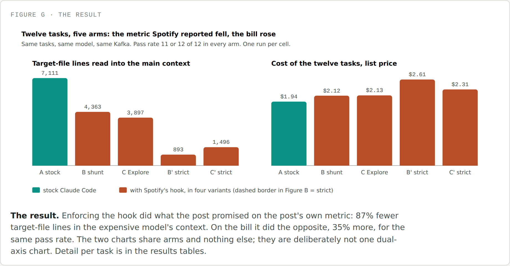
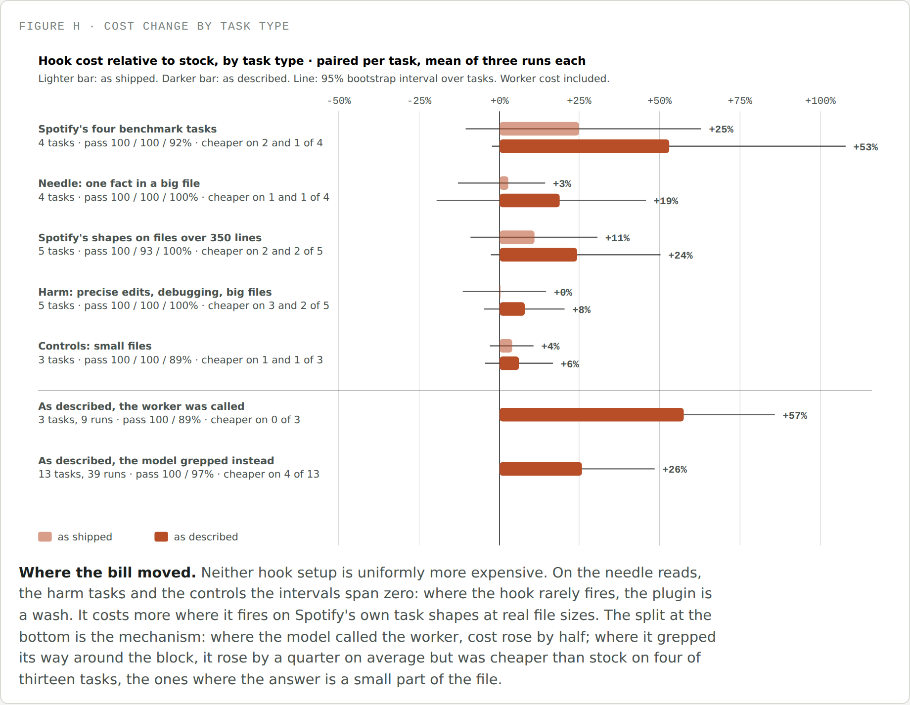
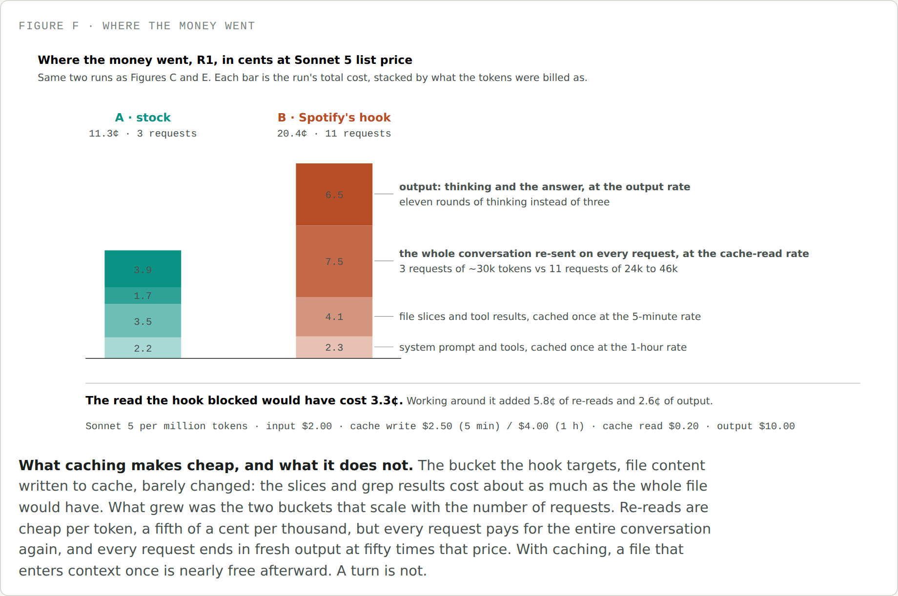

<title>Tokens Are Cheap, Turns Are Not</title>
<meta name="description" content="Spotify published a Claude Code plugin that blocks big file reads and hands them to a cheap model, claiming a 90% token cut. I rebuilt it on Kafka and measured the bill instead of the tokens.">
<link rel="stylesheet" href="https://fonts.googleapis.com/css2?family=IBM+Plex+Sans:wght@400;500;600&family=IBM+Plex+Mono:wght@400;500&display=swap">
<style>
  :root { --bg:#F5F6F3; --surface:#FFFFFF; --ink:#1B1F1D; --ink-2:#4A5350; --ink-3:#7B857F; --line:#D6DAD3; --stock:#0A9385; --hook:#B84E28; --soft:#ECEEE9; --tip:#EDF3EC; --tip-b:#5B8A6B; }
  @media (prefers-color-scheme: dark) { :root:not([data-theme="light"]) { --bg:#141816; --surface:#1C211E; --ink:#E6E9E4; --ink-2:#B4BBB5; --ink-3:#7F8882; --line:#313834; --stock:#1E9A8C; --hook:#C97440; --soft:#232925; --tip:#1B2420; --tip-b:#4E8760; } }
  :root[data-theme="dark"] { --bg:#141816; --surface:#1C211E; --ink:#E6E9E4; --ink-2:#B4BBB5; --ink-3:#7F8882; --line:#313834; --stock:#1E9A8C; --hook:#C97440; --soft:#232925; --tip:#1B2420; --tip-b:#4E8760; }
  * { box-sizing: border-box; }
  body { background:var(--bg); color:var(--ink); font-family:"IBM Plex Sans",system-ui,sans-serif; font-size:17px; line-height:1.65; padding-block:44px 90px; padding-inline:20px; }
  main { max-width:700px; margin:0 auto; }
  .kicker { font-family:"IBM Plex Mono",monospace; font-size:0.78rem; letter-spacing:0.08em; text-transform:uppercase; color:var(--ink-3); margin:0 0 10px; }
  h1 { font-size:2.1rem; line-height:1.2; margin:0 0 6px; letter-spacing:-0.01em; }
  .dek { font-size:1.15rem; color:var(--ink-2); margin:0 0 36px; max-width:56ch; }
  h2 { font-size:1.5rem; margin:56px 0 16px; letter-spacing:-0.005em; }
  h3 { font-size:1.1rem; margin:28px 0 10px; }
  p { margin:0 0 20px; }
  a { color:var(--hook); text-decoration-thickness: 1px; }
  em { font-style: italic; }
  .lede-em { font-style: normal; font-weight: 600; }
  code { font-family:"IBM Plex Mono",monospace; font-size:0.88em; background:var(--soft); padding:0.1em 0.35em; border-radius:4px; }
  pre.code { background:var(--soft); border-radius:8px; padding:14px 18px; overflow-x:auto; font-family:"IBM Plex Mono",monospace; font-size:0.82em; line-height:1.6; margin:8px 0 20px; color:var(--ink); }
  pre.code code { background:none; padding:0; font-size:1em; }
  pre.code .c { color:var(--ink-3); }
  figure { margin:32px 0; }
  figure img { width:100%; display:block; border:1px solid var(--line); border-radius:8px; background:var(--surface); }
  figcaption { font-family:"IBM Plex Mono",monospace; font-size:0.72rem; letter-spacing:0.05em; text-transform:uppercase; color:var(--ink-3); margin-top:10px; }
  .callout { border-left:3px solid var(--tip-b); background:var(--tip); border-radius:0 8px 8px 0; padding:16px 20px; margin:28px 0; }
  .callout .label { font-family:"IBM Plex Mono",monospace; font-size:0.72rem; letter-spacing:0.06em; text-transform:uppercase; color:var(--tip-b); display:block; margin-bottom:8px; font-weight:600; }
  .callout p:last-child { margin-bottom:0; }
  .callout.hook { border-left-color:var(--hook); }
  .callout.hook .label { color:var(--hook); }
  blockquote.tldr { border:none; margin:24px 0; padding:0 0 0 18px; border-left:2px solid var(--line); font-style:italic; color:var(--ink-2); }
  ul, ol { padding-left: 1.3em; margin: 0 0 20px; }
  li { margin-bottom: 10px; }
  li b { color: var(--ink); }
  .terms b { font-family:"IBM Plex Mono",monospace; font-weight:600; background:none; }
  hr.sec { border:none; border-top:1px solid var(--line); margin:48px 0; }
  .byline { color:var(--ink-3); font-size:0.9rem; margin: -16px 0 40px; }
  @media (max-width: 480px) { h1 { font-size: 1.7rem; } h2 { font-size: 1.3rem; } body { font-size: 16px; } }
</style>

<main>

<p class="kicker">Field dispatch</p>
<h1>Tokens Are Cheap, Turns Are Not</h1>
<p class="dek">Spotify published a Claude Code plugin that blocks the model from reading big files and hands them to a cheap worker instead, claiming a 90% cut in tokens. I rebuilt it on a real repo and measured the bill. The number they reported is real. The bill went up anyway.</p>
<p class="byline">Twenty-one tasks, three Claude Code setups, 189 offline sessions on one Java monorepo.</p>

<p>I feel like everyone's caught wind of the term <em>tokenomics</em> recently. From customer calls to consultants' LinkedIn posts, people are getting more and more cognizant of AI spend and looking for a better way to quantify it. It can't just be priced per question, flat — we have to think about question complexity and model power together, and lately, teams have started measuring that complexity in tokens needed. Makes sense.</p>

<p>That's led a lot of cost-wary teams to start building their own token optimizers. Seeing the trend take off, I wanted to dig into one of these examples myself. Last week, Spotify published a blog post that bounced around Hacker News and Reddit, about a Claude Code plugin claiming a 90% cut in tokens. So in this piece, I'm taking you with me as we rebuild it and look under the hood.</p>

<blockquote class="tldr">TLDR; the token reduction Spotify reported is real on the metric they used: with their hook enforced, Claude read 87% fewer lines of the big files. The tokens the frontier model was actually billed for went up 41%, and the dollar cost went up 8% with the plugin as they shipped it and 19% with the hook doing what their post describes, at the same pass rate. Whether a given task came out cheaper was decided by the task, not by the plugin, and the reason isn't the greps or the worker — it's how Claude Code's own prompt caching prices a turn. A line count can't see any of that.</blockquote>

<h2>What Spotify built, and why</h2>

<p><b>The why:</b> the Spotify team noticed a trend in their own Claude Code usage — a huge share of the tokens they were burning went toward tasks that didn't actually need the frontier-level reasoning power they were paying for. Spotify works out of one large monorepo, and most of that non-reasoning work fell into two buckets: <b>bulk file reads</b>, loading a 700-plus-line file into context just to check a pattern or answer a question about a fraction of it, and <b>templated code generation</b>, writing boilerplate where the structure is already known. Because Claude Code resends the whole conversation on every request, any large file that's entered context once stays there and keeps getting rebilled on every turn after it. Spotify didn't want to keep paying frontier prices to carry around the parts of a file nobody asked about.</p>

<p><b>The what:</b> to fix it, Spotify built a more deterministic workflow for exactly those two task types — send the request to a smaller model to process, and hand Claude Code back only the key context it actually needs. They picked a Gemini model for the worker (other coverage of the post names Gemini 2.5 Flash), reading the large file in full and returning just the parts that matter. They published the plugin, called <em>shunt</em>, in their <a href="https://github.com/spotify/portal-ai-plugins/tree/b5ed620c6850f1ea7327b7cd9d0696aae0bf2d89/plugins/shunt">portal-ai-plugins</a> repository, which is what everything below is built on.</p>

<figure>
  
  <figcaption>Figure A · shunt's two delegation paths, at a glance</figcaption>
</figure>

<p>Here's the assumption everything rests on: when the model is refused a read, it does what the hook's message tells it to. Nothing about a <code>PreToolUse</code> hook enforces that — it can stop one tool call, but it has no say over what the model tries next.</p>

<blockquote class="tldr">TLDR; the skill is the manual. The hook is supposed to force the model to open it. Whether that actually holds is the seam this whole piece pulls on.</blockquote>

<h2>Experiment Design</h2>

<p>Every task ran under three setups, each one change from the last: <em>stock</em> Claude Code, nothing added; <em>as shipped</em>, stock plus Spotify's plugin exactly as published, including a rule that lets a <code>Read</code> with an offset through even on a big file; and <em>as described</em>, the same plugin with that one rule removed, so the hook actually does what their post says it does. The worker behind both hook setups is the same substitute — a one-turn call to Haiku instead of Spotify's hosted Gemini model, since I don't have access to their internal Portal system — so it's never what explains a difference between the two hook setups.</p>

<h3>Why Kafka</h3>

<p>Spotify's code is private, so this needs a public repo that looks like theirs in the one way the hook cares about: lots of files over 350 lines, in a language their benchmark used. There's a second, less obvious constraint. Stock Claude Code already refuses to read very large files and pages anything over about 25,000 tokens on its own, so the target files have to sit in the band between Spotify's 350-line threshold and Claude Code's own gates, or the hook never gets the chance to fire first.</p>

<p>Backstage, Spotify's own open-source project, was the obvious first pick and lost: only 7.5% of its files clear 350 lines, holding 38% of its code. Apache Kafka has 17% of its files over that line, holding 64% of the code — the hook has real work to do on most of what a developer would touch. Kafka trunk, pinned at one commit, Java and Scala, is the corpus.</p>

<div style="overflow-x:auto; margin:24px 0;"><table style="width:100%; border-collapse:collapse; font-size:0.92em; line-height:1.5;">
<thead><tr><th style="text-align:left; padding:6px 12px 10px 0; border-bottom:2px solid var(--line); color:var(--ink-3); font-family:'IBM Plex Mono',monospace; font-size:0.72rem; letter-spacing:0.05em; text-transform:uppercase;"></th><th style="text-align:right; padding:6px 0 10px 12px; border-bottom:2px solid var(--line); color:var(--ink-3); font-family:'IBM Plex Mono',monospace; font-size:0.72rem; letter-spacing:0.05em; text-transform:uppercase;">Kafka, used</th><th style="text-align:right; padding:6px 0 10px 12px; border-bottom:2px solid var(--line); color:var(--ink-3); font-family:'IBM Plex Mono',monospace; font-size:0.72rem; letter-spacing:0.05em; text-transform:uppercase;">Backstage, rejected</th></tr></thead>
<tbody>
<tr><td style="padding:10px 12px 10px 0; border-bottom:1px solid var(--line); vertical-align:top;">Files over 350 lines</td><td style="padding:10px 0 10px 12px; border-bottom:1px solid var(--line); vertical-align:top; text-align:right; font-family:'IBM Plex Mono',monospace; font-size:0.9em; white-space:nowrap;">1,096 of 6,448 (17%)</td><td style="padding:10px 0 10px 12px; border-bottom:1px solid var(--line); vertical-align:top; text-align:right; font-family:'IBM Plex Mono',monospace; font-size:0.9em; white-space:nowrap;">549 of 7,348 (7.5%)</td></tr>
<tr><td style="padding:10px 12px 10px 0;  vertical-align:top;">Share of code in those files</td><td style="padding:10px 0 10px 12px;  vertical-align:top; text-align:right; font-family:'IBM Plex Mono',monospace; font-size:0.9em; white-space:nowrap;">64%</td><td style="padding:10px 0 10px 12px;  vertical-align:top; text-align:right; font-family:'IBM Plex Mono',monospace; font-size:0.9em; white-space:nowrap;">38%</td></tr>
</tbody></table></div>

<p>One honest limit: Kafka is a repo the model has seen in training, and Spotify's code is not. So every session in the final grid runs offline and sandboxed — no web tools, no network commands, no reading anything outside the checkout, a private empty <code>/tmp</code> per session, and a system-prompt line telling the model to answer from the repository, not memory. That constraint applies to all three setups equally, stock included, so the baseline is "Claude Code as installed, cut off from the internet," which is the honest baseline for a private codebase. Every one of the 189 runs actually touched its target file before answering; nobody got the right answer from memory.</p>

<h3>Why We Ran It Through Claude</h3>

<p>Spotify's own benchmark never sends a single request through Claude Code. Its eval script calls <code>scripts/bulk-read</code> or <code>scripts/code-write</code> directly — no <code>Read</code> tool call, no hook in the path, no model in the loop. It's timing a deterministic script against itself, twice: once as the corpus, once as the summary. That's a fine test of the script. It's not a test of the plugin, because the plugin's entire premise is a hook interrupting an agent that's free to do whatever it wants next, and nothing in a direct script call can produce or observe that.</p>

<p>So every task here runs the whole way through: one live, headless <code>claude -p</code> session per task per setup — the real model, on the real repo, making its own tool calls, hitting the real hook, and choosing its own next move after a block. That's the only way to actually see whether the model opens the skill, pages around the block, or greps its way past it, instead of assuming one of those and calling it a benchmark.</p>

<h3>How It Ran</h3>

<p>Nothing here is interactive. The harness unpacks a fresh, historyless Kafka checkout, drops in one setup's <code>.claude</code> folder — Spotify's plugin lives there as a project config, not a plugin install — and calls Claude Code once in headless mode with the task's question as the argument. This is the actual command, the same for all three setups:</p>

<pre class="code">CLAUDE_CODE_ENABLE_TELEMETRY=1 \
OTEL_EXPORTER_OTLP_ENDPOINT=http://127.0.0.1:4318 \
CLAUDE_CODE_PROMPT_CACHE_TTL=5m CLAUDE_CODE_SUBAGENT_PROMPT_CACHE_TTL=5m \
unshare -m bash -c 'mount -t tmpfs none /tmp && exec "$@"' _ \
claude -p "$PROMPT" \
  --model claude-sonnet-5 \
  --permission-mode acceptEdits \
  --settings "$HARNESS/settings.json" \
  --append-system-prompt "Answer from the repository checked out in the \
working directory. Do not rely on memory of the upstream project or on \
the internet." \
  --max-turns 40 \
  --output-format json</pre>

<p>The cache-TTL pin makes sure every setup pays the same rate for writing a file to the prompt cache, so the comparison can't be skewed by Claude Code silently switching billing tiers mid-run — that turns out to matter a lot in Discussion, below. <code>--settings</code> loads the offline sandbox. <code>unshare</code> gives the session its own empty <code>/tmp</code> so nothing it writes can be found by a later run. When it exits, the harness collects the billed cost and token usage, the full transcript, and the OpenTelemetry trace, diffs the workspace against the starting commit, grades the answer, and deletes the workspace. The next run starts clean.</p>

<h2>Evaluation Design</h2>

<h3>Why These Tasks</h3>

<p>Twenty-one questions, five named categories, each asked the way a developer would with no file path given, so the session has to find the file before it can read it:</p>

<ul>
<li><b>Spotify's own benchmark (4 tasks).</b> Their four rows, rebuilt on Kafka at the same shapes and file sizes — so the comparison is theirs first.</li>
<li><b>Needle reads (4 tasks).</b> One fact buried in a file of 1,000 to 1,900 lines. This is the case Spotify's own motivation describes — read 700 lines to check one thing — and the case their benchmark never tests.</li>
<li><b>Their shapes at real file sizes (5 tasks).</b> The same question shapes as their four rows, but on files big enough to actually trip the 350-line threshold, which two of theirs never do.</li>
<li><b>Harm (5 tasks).</b> Precise edits and debugging — the two task types Spotify's own post says the approach isn't for. The hook only sees a line count, so it fires on these anyway.</li>
<li><b>Controls (3 tasks).</b> The same shapes on small files, where the hook can't fire at all, to measure what the plugin costs just by being installed.</li>
</ul>

<p>Three repetitions of every task, interleaved by setup so time of day never lines up with one setup by coincidence: 189 sessions, about $30 at list price.</p>

<h3>Why These Metrics</h3>

<p>Spotify's own win metric is one number: <em>tokens avoided</em>, the corpus's character count divided by four, minus the summary's character count divided by four — computed on their deterministic script path, worker cost never included. That's not robust enough to test what this piece is actually asking. It never checks whether the answer was even correct. It says nothing about how many turns it took to get there. And it bakes in the exact assumption under test — that a token avoided is a dollar saved — instead of checking it.</p>

<p>So this test measures four things per run instead of one, each summed per turn and kept separate for the main model and the worker, to get the full picture instead of one angle on it:</p>

<ul>
<li><b>Performance</b> — pass at the grader's threshold, and separately, whether the target file was actually read, grepped, or delegated at all. A right answer that never touched the file is flagged as lucky, not counted as evidence the setup worked.</li>
<li><b>Cost</b> — every run's cost recomputed turn by turn from the transcript at list price and checked against what Claude Code itself billed. The headline number is paired per task: each task's own before-and-after difference, then the mean of those differences with an interval, not one pooled average across twenty-one very different questions.</li>
<li><b>Latency</b> — wall clock, turns per run, per-turn duration from OpenTelemetry.</li>
<li><b>Behavior</b> — blocks, what the model's very next call was after each one, and whether that call was the worker, a paged read, or a grep. This is the number Spotify's own evals never produced, because nothing in their harness runs long enough to have a "next call" at all.</li>
</ul>

<p>Every earlier pass at this grid taught me a control I was missing. The most important one: the strict block message can't hint at the fallback ("use grep for exact lines") or it isn't measuring the model's own choice anymore — it's measuring an instruction I wrote. The final message is Spotify's, word for word, minus only the sentence about the loophole in the setup that closes it.</p>

<h2>Results</h2>

<p>Take one real question, carried through every setup as a worked example: <em>how does the broker lifecycle manager move between states?</em> The file is 770 lines. Stock greps for the class, reads it whole, answers — three turns, ten cents. As shipped, the read gets refused, and the model pages around the block with an offset, which the hook allows; the whole file ends up in context anyway, one turn later, in nine turns total, seventeen cents. As described, with that loophole closed, the model does what Spotify actually designed: opens the skill, calls the worker, gets a real summary back, checks one thing with a grep, and answers — also nine turns, fifteen cents including the worker. Every answer is correct. The enforced setup is the one working exactly as intended, and it's still the most expensive of the three.</p>

<h3>Their metric, then the real one</h3>

<p>"90% fewer tokens" turns out to mean three different things, and the answer changes with each one. All four rows below are means per run across the same 189 sessions:</p>

<div style="overflow-x:auto; margin:24px 0;"><table style="width:100%; border-collapse:collapse; font-size:0.92em; line-height:1.5;">
<thead><tr><th style="text-align:left; padding:6px 12px 10px 0; border-bottom:2px solid var(--line); color:var(--ink-3); font-family:'IBM Plex Mono',monospace; font-size:0.72rem; letter-spacing:0.05em; text-transform:uppercase;">What's being counted</th><th style="text-align:right; padding:6px 0 10px 12px; border-bottom:2px solid var(--line); color:var(--ink-3); font-family:'IBM Plex Mono',monospace; font-size:0.72rem; letter-spacing:0.05em; text-transform:uppercase;">Stock</th><th style="text-align:right; padding:6px 0 10px 12px; border-bottom:2px solid var(--line); color:var(--ink-3); font-family:'IBM Plex Mono',monospace; font-size:0.72rem; letter-spacing:0.05em; text-transform:uppercase;">As shipped</th><th style="text-align:right; padding:6px 0 10px 12px; border-bottom:2px solid var(--line); color:var(--ink-3); font-family:'IBM Plex Mono',monospace; font-size:0.72rem; letter-spacing:0.05em; text-transform:uppercase;">As described</th></tr></thead>
<tbody>
<tr><td style="padding:10px 12px 10px 0; border-bottom:1px solid var(--line); vertical-align:top;"><b>Spotify's formula.</b> File chars/4 minus summary chars/4, only when the worker is called.</td><td style="padding:10px 0 10px 12px; border-bottom:1px solid var(--line); vertical-align:top; text-align:right; font-family:'IBM Plex Mono',monospace; font-size:0.9em; white-space:nowrap;">—</td><td style="padding:10px 0 10px 12px; border-bottom:1px solid var(--line); vertical-align:top; text-align:right; font-family:'IBM Plex Mono',monospace; font-size:0.9em; white-space:nowrap;">never called</td><td style="padding:10px 0 10px 12px; border-bottom:1px solid var(--line); vertical-align:top; text-align:right; font-family:'IBM Plex Mono',monospace; font-size:0.9em; white-space:nowrap;">defined on 5 of 63 runs</td></tr>
<tr><td style="padding:10px 12px 10px 0; border-bottom:1px solid var(--line); vertical-align:top;"><b>Lines of the target the main model read with <code>Read</code>.</b></td><td style="padding:10px 0 10px 12px; border-bottom:1px solid var(--line); vertical-align:top; text-align:right; font-family:'IBM Plex Mono',monospace; font-size:0.9em; white-space:nowrap;">450</td><td style="padding:10px 0 10px 12px; border-bottom:1px solid var(--line); vertical-align:top; text-align:right; font-family:'IBM Plex Mono',monospace; font-size:0.9em; white-space:nowrap;">232 (-48%)</td><td style="padding:10px 0 10px 12px; border-bottom:1px solid var(--line); vertical-align:top; text-align:right; font-family:'IBM Plex Mono',monospace; font-size:0.9em; white-space:nowrap;">59 (-87%)</td></tr>
<tr><td style="padding:10px 12px 10px 0; border-bottom:1px solid var(--line); vertical-align:top;"><b>Target content reaching the model by any tool</b> (Read, Grep, Bash), chars/4.</td><td style="padding:10px 0 10px 12px; border-bottom:1px solid var(--line); vertical-align:top; text-align:right; font-family:'IBM Plex Mono',monospace; font-size:0.9em; white-space:nowrap;">6,016</td><td style="padding:10px 0 10px 12px; border-bottom:1px solid var(--line); vertical-align:top; text-align:right; font-family:'IBM Plex Mono',monospace; font-size:0.9em; white-space:nowrap;">3,721 (-38%)</td><td style="padding:10px 0 10px 12px; border-bottom:1px solid var(--line); vertical-align:top; text-align:right; font-family:'IBM Plex Mono',monospace; font-size:0.9em; white-space:nowrap;">2,919 (-51%)</td></tr>
<tr><td style="padding:10px 12px 10px 0;  vertical-align:top;"><b>Input tokens the frontier model was billed for.</b> The thing the invoice counts.</td><td style="padding:10px 0 10px 12px;  vertical-align:top; text-align:right; font-family:'IBM Plex Mono',monospace; font-size:0.9em; white-space:nowrap;">229,697</td><td style="padding:10px 0 10px 12px;  vertical-align:top; text-align:right; font-family:'IBM Plex Mono',monospace; font-size:0.9em; white-space:nowrap;">277,146 (+21%)</td><td style="padding:10px 0 10px 12px;  vertical-align:top; text-align:right; font-family:'IBM Plex Mono',monospace; font-size:0.9em; white-space:nowrap;">324,523 (+41%)</td></tr>
</tbody></table></div>

<p>Read top to bottom: on Spotify's own formula, the shipped hook has nothing to report because the worker is never called, and the enforced hook reports a number on only 5 of 63 runs. On the metric their number actually describes — lines of the big file Claude reads — the enforced hook delivers the 90%: down 87%. Count what reaches the model through <em>any</em> tool and the cut is a smaller 51%, because grep results fill part of the gap back in. Count what the frontier model is actually billed for, and it goes <em>up</em>, 21% as shipped and 41% as described.</p>

<h3>Performance, cost, latency</h3>

<figure>
  
  <figcaption>Figure G · twenty-one tasks, three runs each</figcaption>
</figure>

<p><b>Performance</b> is unchanged: 100% of stock runs passed, 98% as shipped, 97% as described — three failures in 189, one of them a checklist grader on a code-generation control, not the hook. <b>Cost</b> rose 8% as shipped and 19% as described, worker included; paired per task, the enforced hook's own 95% interval is +7% to +39%, which doesn't cross zero. <b>Latency</b> rose with it: 6.1 turns a run for stock, 7.7 as shipped, 9.2 as described; wall time from 39 seconds to 51. And on <b>behavior</b>: given a neutral refusal and a skill it's never opened before, the model delegated to the worker on 7 of 96 blocks — about one in twenty — and grepped or ran a shell search around the rest.</p>

<h3>By task type</h3>

<figure>
  
  <figcaption>Figure H · cost change by task type, paired per task</figcaption>
</figure>

<div style="overflow-x:auto; margin:24px 0;"><table style="width:100%; border-collapse:collapse; font-size:0.92em; line-height:1.5;">
<thead><tr><th style="text-align:left; padding:6px 12px 10px 0; border-bottom:2px solid var(--line); color:var(--ink-3); font-family:'IBM Plex Mono',monospace; font-size:0.72rem; letter-spacing:0.05em; text-transform:uppercase;">Category</th><th style="text-align:right; padding:6px 0 10px 12px; border-bottom:2px solid var(--line); color:var(--ink-3); font-family:'IBM Plex Mono',monospace; font-size:0.72rem; letter-spacing:0.05em; text-transform:uppercase;">As shipped, paired</th><th style="text-align:right; padding:6px 0 10px 12px; border-bottom:2px solid var(--line); color:var(--ink-3); font-family:'IBM Plex Mono',monospace; font-size:0.72rem; letter-spacing:0.05em; text-transform:uppercase;">As described, paired</th><th style="text-align:left; padding:6px 0 10px 12px; border-bottom:2px solid var(--line); color:var(--ink-3); font-family:'IBM Plex Mono',monospace; font-size:0.72rem; letter-spacing:0.05em; text-transform:uppercase;">Cheaper than stock on</th></tr></thead>
<tbody><tr><td style="padding:10px 12px 10px 0; border-bottom:1px solid var(--line); vertical-align:top;">Spotify's own four</td><td style="padding:10px 0 10px 12px; border-bottom:1px solid var(--line); vertical-align:top; text-align:right; font-family:'IBM Plex Mono',monospace; font-size:0.9em; white-space:nowrap;">+25%</td><td style="padding:10px 0 10px 12px; border-bottom:1px solid var(--line); vertical-align:top; text-align:right; font-family:'IBM Plex Mono',monospace; font-size:0.9em; white-space:nowrap;">+53%</td><td style="padding:10px 12px 10px 12px; border-bottom:1px solid var(--line); vertical-align:top; font-size:0.9em; color:var(--ink-2);">cheaper on 2 / 1 of 4</td></tr><tr><td style="padding:10px 12px 10px 0; border-bottom:1px solid var(--line); vertical-align:top;">Needle reads</td><td style="padding:10px 0 10px 12px; border-bottom:1px solid var(--line); vertical-align:top; text-align:right; font-family:'IBM Plex Mono',monospace; font-size:0.9em; white-space:nowrap;">+3%</td><td style="padding:10px 0 10px 12px; border-bottom:1px solid var(--line); vertical-align:top; text-align:right; font-family:'IBM Plex Mono',monospace; font-size:0.9em; white-space:nowrap;">+19%</td><td style="padding:10px 12px 10px 12px; border-bottom:1px solid var(--line); vertical-align:top; font-size:0.9em; color:var(--ink-2);">cheaper on 1 / 1 of 4</td></tr><tr><td style="padding:10px 12px 10px 0; border-bottom:1px solid var(--line); vertical-align:top;">Spotify's shapes, real sizes</td><td style="padding:10px 0 10px 12px; border-bottom:1px solid var(--line); vertical-align:top; text-align:right; font-family:'IBM Plex Mono',monospace; font-size:0.9em; white-space:nowrap;">+11%</td><td style="padding:10px 0 10px 12px; border-bottom:1px solid var(--line); vertical-align:top; text-align:right; font-family:'IBM Plex Mono',monospace; font-size:0.9em; white-space:nowrap;">+24%</td><td style="padding:10px 12px 10px 12px; border-bottom:1px solid var(--line); vertical-align:top; font-size:0.9em; color:var(--ink-2);">cheaper on 2 / 2 of 5</td></tr><tr><td style="padding:10px 12px 10px 0; border-bottom:1px solid var(--line); vertical-align:top;">Harm</td><td style="padding:10px 0 10px 12px; border-bottom:1px solid var(--line); vertical-align:top; text-align:right; font-family:'IBM Plex Mono',monospace; font-size:0.9em; white-space:nowrap;">+0%</td><td style="padding:10px 0 10px 12px; border-bottom:1px solid var(--line); vertical-align:top; text-align:right; font-family:'IBM Plex Mono',monospace; font-size:0.9em; white-space:nowrap;">+8%</td><td style="padding:10px 12px 10px 12px; border-bottom:1px solid var(--line); vertical-align:top; font-size:0.9em; color:var(--ink-2);">cheaper on 3 / 2 of 5</td></tr><tr><td style="padding:10px 12px 10px 0; border-bottom:1px solid var(--line); vertical-align:top;">Controls</td><td style="padding:10px 0 10px 12px; border-bottom:1px solid var(--line); vertical-align:top; text-align:right; font-family:'IBM Plex Mono',monospace; font-size:0.9em; white-space:nowrap;">+4%</td><td style="padding:10px 0 10px 12px; border-bottom:1px solid var(--line); vertical-align:top; text-align:right; font-family:'IBM Plex Mono',monospace; font-size:0.9em; white-space:nowrap;">+6%</td><td style="padding:10px 12px 10px 12px; border-bottom:1px solid var(--line); vertical-align:top; font-size:0.9em; color:var(--ink-2);">cheaper on 1 / 1 of 3</td></tr></tbody></table></div>

<p>On 12 of the 21 tasks, all three repetitions land on the same side of stock — the split by category isn't noise, and what it means is next.</p>

<h2>Discussion</h2>

<h3>What's actually driving the cost</h3>

<p>Not the greps, and not the worker. Both are cheap: a grep result is a few hundred characters, and the whole worker call, numbered file in and summary out, runs about two cents. It's caching, and specifically the part of caching a <code>PreToolUse</code> hook has no way to see. Claude Code writes a file to its prompt cache once, at 1.25 times the price of a fresh input token, and reads it back on every later turn at a tenth the input price — deliberately cheap. On the traced example, that write is about two cents in every setup, stock included. That bucket barely moves between setups.</p>

<p>What moves is the bucket the hook never looks at, because it only ever sees the one tool call directly in front of it: the entire conversation so far, resent from cache at that cheap rate on every single turn, plus a fresh round of the model's own thinking at the end of each one, priced fifty times higher than a cache read. Stock pays that cost three times on the traced question. Both hook setups pay it nine times — not because any one grep or the worker call is expensive, but because refusing the read didn't remove the need to know what was in the file. It just meant paying to ask six more times.</p>

<figure>
  
  <figcaption>Figure F · where the money actually went, same question, from the OpenTelemetry trace</figcaption>
</figure>

<p>The read the hook refused would have cost about two cents to write to cache. Paging around it added six cents of exactly this. Delegating it added four, only two of which were the worker itself. Caching is the whole reason a token avoided isn't automatically a dollar saved: the tokens the hook is counting are nearly free to keep around once they're cached. The tokens it never counts, the ones spent asking again, are not.</p>

<h3>Why the split by task shape</h3>

<p>Where the answer is a small slice of a big file — how three classes relate, which methods lack tests — the enforced hook is cheaper on every run, because a targeted grep does the job the whole-file read would have, at the same or fewer turns. Where the answer is most of the file — list every config key, generate a class from a 616-line reference, make a precise edit — it costs more on every run, because the content has to come in one way or another and the block just adds the turns it takes to get there. The category table above is that pattern in numbers: Spotify's own four benchmark tasks and their scaled-up shapes are exactly where the block fires most and pays for it least, because those are enumerate-the-whole-file questions by construction. A line-count threshold has no way to tell "which of these" from "all of these" apart, and that distinction, not file size, is what actually predicts whether a block will pay off.</p>

<h3>Let Claude Be Claude</h3>

<p>There's a broader case against a hook shaped like this, and it's not really about shunt specifically. Prompt caching — the exact mechanism doing the damage above — wasn't always priced this way; it's a relatively recent piece of how Claude Code bills a session, and it's the platform's own optimization, not something any plugin author decided to build around. And in this test's own stock arm, with no hook installed at all, the model already defaulted to grepping instead of reading the whole file on most of the needle and harm tasks. That's not something I configured. It's what Sonnet 5 already does inside Claude Code, today, for free.</p>

<p>Both of those are the harness getting cheaper on its own schedule, independent of any plugin. A hook keyed to a static proxy — file length — is making a bet against a moving target: every time the underlying platform gets better at exactly the thing the hook is trying to force (narrower reads, cheaper resends), the stock baseline it's being compared to improves without anyone touching the hook's code, and the hook's own case gets weaker. Token count was never a perfect stand-in for dollar cost, and it's a worse one with every release that makes the harness itself more efficient. The more durable move, if the goal is actually spend, is to let Claude be Claude — trust the platform's own continually-tuned defaults, and go looking for savings in the shape of the questions you're asking it, not in a rule bolted on top that assumes today's defaults are the ceiling.</p>

<h2>Conclusion</h2>

<p>Spotify's number is real, and it's the wrong number. "File size avoided, divided by four" measures exactly how many tokens a whole-file read would have cost, and once the hook actually enforces the block, it delivers most of that. What it never measures is the response to the block — a refusal is an instruction, not a delegation, and in this test the instruction was followed about one time in twenty. The other nineteen times, the model found its own way back to the same information, and paid the caching-priced cost of asking again to do it.</p>

<p>The honest limit on all of this: every run here is a single headless task, done in under a minute. Spotify's case is strongest in a long interactive session, where a big file sitting in context gets resent turn after turn for an hour, sometimes at a full cache rewrite — I didn't test that regime, and it's the one place their number and mine could both be right. But the general point survives it: a token avoided isn't automatically a dollar saved, a turn is the unit the invoice actually counts, and no hook that only watches the tool call in front of it — while the harness underneath it keeps getting better on its own — can tell the difference.</p>

<p class="byline" style="margin-top:8px">The full write-up, with the deviations table, the metrics as equations, the validation checklist, and all 189 runs, is at <a href="https://github.com/hmassa14/TurnsNotTokens">github.com/hmassa14/TurnsNotTokens</a>.</p>

</main>
